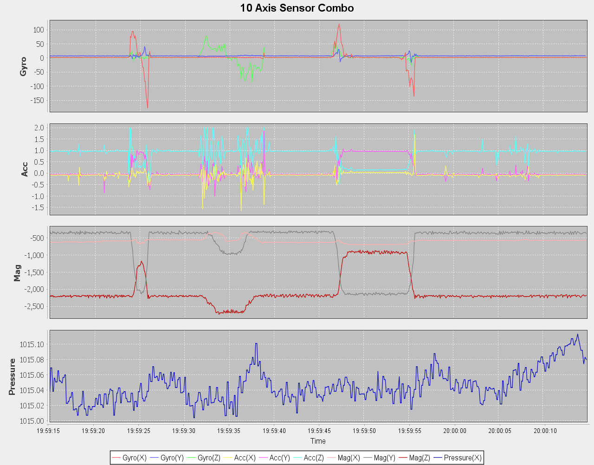

Lazurite Graphは、取得したセンサーのデータを簡単にグラフ化してみることができるツールです。
ロームセンサーシールドは、グラフ表示のためのサンプルプログラムとグラフ設定用画面がデフォルトで含まれているため、センサーを購入してLazuriteと接続するだけでセンサーの値をリアルタイムにモニタリングすることができます。

Windowsのインストール方法はこちら
Raspberry Piへのインストール方法はこちら
技術情報はこちら
RohmSensorSheildの使い方はこちら